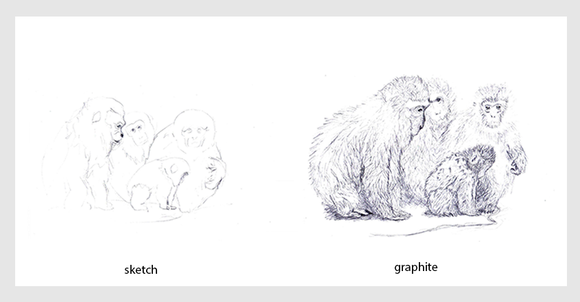
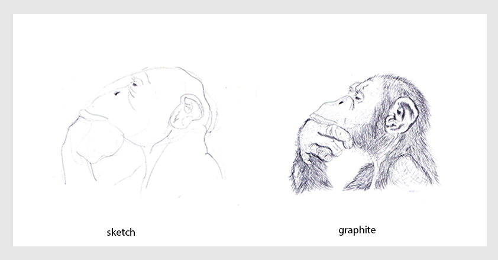
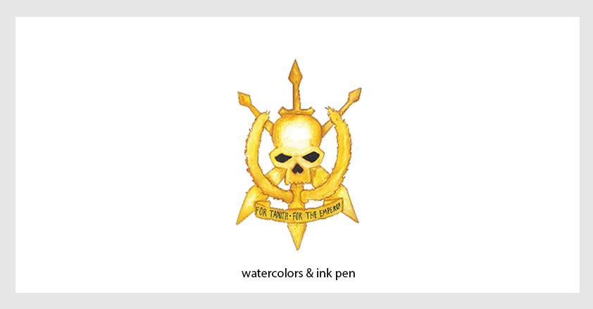
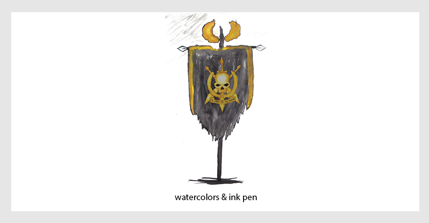

This section includes illustrations made with different techniques, such as: graphite, watercolors, gouache and acrylic.
≈
Δ
>
<

Theodor W. Adorno
He was a great philosopher and still is a very interesting subject.

Baby
A baby plays among water bubbles.

Snow Monkeys
A family of monkeys confort the young monkey staring at the frozen lake.

The Thinking Monkey
To monkey or not.

A Comfy Artist
Sometimes the scarf gets in the way.

The Head
It's a big expressive head!

Tanith Symbol
Only a few stood against this symbol and lived to tell their stories.

The Commissar
He shouts orders and charges for the emperor.

The Banner
It flies among smoke and ruins.